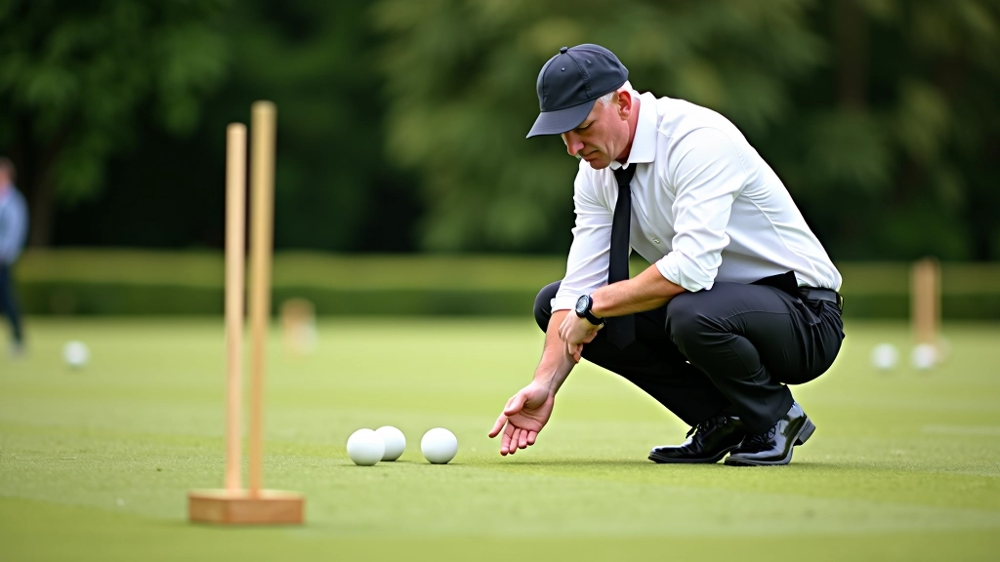
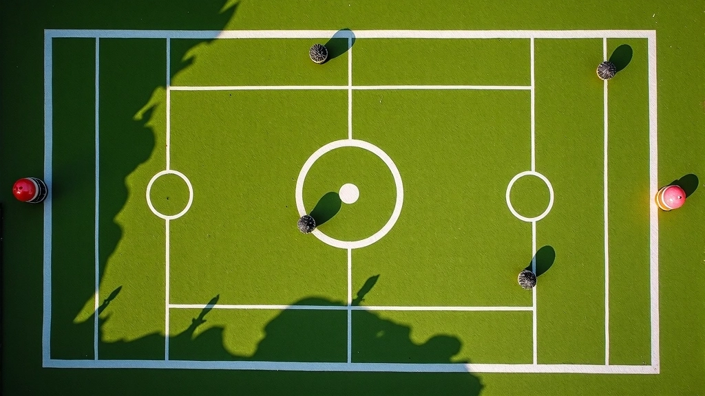
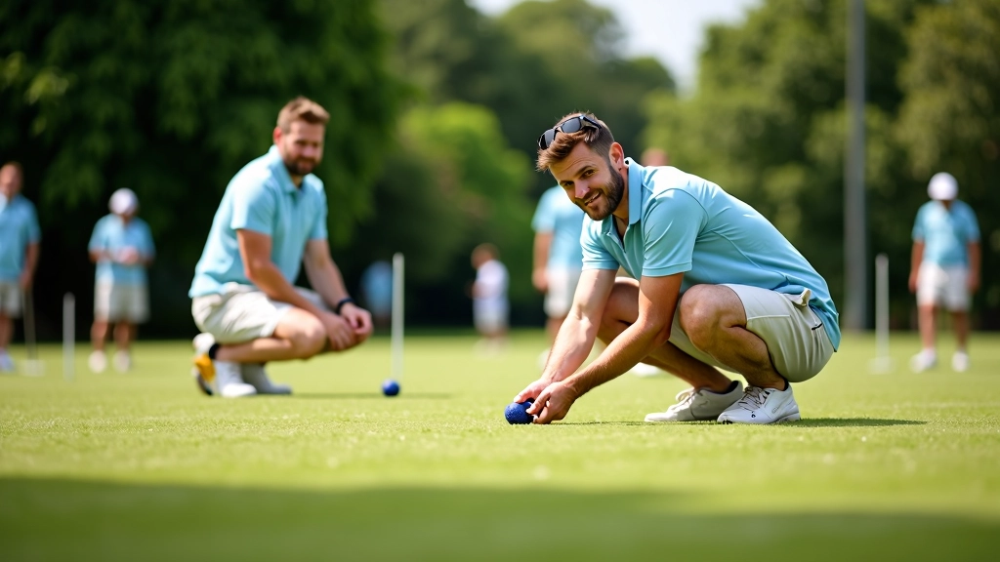

إتقان تقنية التقشير الأساسية
خطوات عملية لتعلم حركة التقشير بشكل صحيح، من الوقفة الأساسية إلى التحكم بقوة الضربة
فن الترك في لعبة الكروكيه يتطلب فهماً عميقاً للهندسة والتوقيت والتخطيط. نتعمق في التقنيات المتقدمة التي تحول لاعبي الكروكيه إلى استراتيجيين محترفين قادرين على السيطرة على مسار اللعبة.


الترك هو إحدى أهم المهارات في الكروكيه. ببساطة، إنه عملية ترك كرتك في موضع يصعب على خصمك الاستفادة منه. لكن الأمر أكثر تعقيداً من ذلك بكثير.
عندما تلعب الكرة وتمررها إلى خصمك، تحتاج إلى التفكير في موضع الكرة التالي. هل ستكون قريبة من البوابة التالية؟ هل ستوفر حماية لك في اللفة القادمة؟ هل ستجبر خصمك على لعبة دفاعية؟ كل هذه الأسئلة تحدد جودة الترك.
لاعبو الكروكيه الحقيقيون لا يتركون الأشياء للصدفة. هم يخططون كل حركة بعناية، ويتوقعون ردود الخصم، ويضعون أنفسهم دائماً في موضع أفضل للفة التالية.

هناك ثلاث استراتيجيات أساسية للترك يجب أن يتقنها كل لاعب. الأولى هي "الترك الدفاعي"، حيث تترك الكرة بعيدة عن البوابة التالية. تحتاج إلى فهم أن خصمك سيحاول الاقتراب من البوابة، لذا عليك إبعاد الكرة عن مسار نجاحه.
الثانية هي "الترك الهجومي"، وهنا تترك كرتك بالقرب من البوابة التالية ولكن ليس بشكل مباشر. تريد أن تجعل من الصعب على خصمك تجاوز البوابة دون أن تساعده بشكل مباشر. المسافة مهمة جداً — عادة ما تكون حوالي 60-90 سنتيمتراً.
الثالثة هي "الترك المركزي"، وهي الأكثر توازناً. تترك الكرة في منتصف الملعب تقريباً، مما يجعل من الصعب على الخصم التنبؤ بخطتك التالية. هذا النوع من الترك مفيد جداً عندما تكون متأكداً من قوتك وتريد الاحتفاظ بالمبادرة.

المحتوى المقدم هنا هو بغرض تعليمي وإعلامي فقط. كل لاعب لديه أسلوب لعب فريد وظروف ملعب مختلفة. ننصحك بممارسة هذه الاستراتيجيات مع مدرب أو لاعب ذو خبرة لتطوير فهمك الخاص بالكروكيه. النتائج تختلف بناءً على الخبرة والممارسة والظروف البيئية.
عندما تصبح أكثر خبرة، يجب أن تبدأ في التفكير بأبعد من اللفة التالية مباشرة. أفضل اللاعبين يخططون 3-4 لفات قادمة. إنهم يضعون أنفسهم في مواضع تسمح لهم بالسيطرة على تدفق اللعبة.
تقنية "التوزيع المتوازن" مهمة جداً هنا. بدلاً من محاولة الفوز بسرعة، تتعمد توزيع الكرات حول الملعب. هذا يعطيك خيارات أكثر في كل لفة ويجعل من الصعب على الخصم التنبؤ بحركتك. المسافات النسبية بين الكرات مهمة — حوالي 1.5 إلى 2 متر بين كل كرة.
هناك أيضاً مفهوم "الترك الاحتياطي". إذا كنت تعلم أنك قد لا تستطيع الفوز في هذه اللفة، فأنت تترك كرتك بطريقة تجعلك في أفضل موضع ممكن للفة القادمة. لا تستسلم أبداً — بدلاً من ذلك، حسّن موضعك تدريجياً.
لا يوجد بديل للممارسة. يجب أن تقضي وقتاً على الملعب لتطوير "الشعور" بالمسافات والزوايا. ابدأ بتمارين بسيطة: ضع كرتك على مسافة معينة من البوابة وحاول تركها في مواضع محددة.
تمرين فعّال جداً هو "لعبة الترك". ترك كرتين على الملعب وحاول ترك الكرة الثالثة في موضع معين مقابل الاثنتين. كرر هذا 20-30 مرة. ستلاحظ كيف تتحسن قراءتك للملعب بسرعة.

قبل أن تترك الكرة، خذ لحظة لفحص الملعب بالكامل. أين الكرات الأخرى؟ ما هو موضع البوابة التالية؟ كيف يمكن للخصم أن يستخدم المساحات المتاحة؟
أسوأ ترك هو الترك الذي يساعد خصمك. لا تترك الكرة مباشرة أمام البوابة التالية ما لم تكن متأكداً تماماً من خطتك.
لا تترك الكرات على خط واحد. استخدم العمق الكامل للملعب. توزيع الكرات عمودياً يجعل من الصعب على الخصم تشكيل كتلة دفاعية قوية.
في بعض الأحيان، أفضل ترك هو الترك البطيء. كلما بطأت لعبتك، كلما زاد التحكم لديك في المسافات والزوايا.
استراتيجيات الترك الفعالة هي الأساس الحقيقي للعبة الكروكيه المتقدمة. إنها ليست مجرد حركة تقنية — بل هي فن يجمع بين الهندسة والتخطيط والنفسية.
عندما تتقن الترك، ستجد أن السيطرة على اللعبة تصبح أسهل بكثير. خصمك سيكون دائماً في موضع يجد فيه صعوبة في الرد عليك. وهذا بالضبط هو ما يفصل لاعب الكروكيه الجيد عن الاستثنائي.
ابدأ بالتمارين البسيطة. مارس الاستراتيجيات الأساسية حتى تصبح طبيعية بالنسبة لك. ثم انتقل تدريجياً إلى التخطيط الأطول أمداً. قبل أن تدرك ذلك، ستصبح خطير جداً على أي منافس.
خطوات عملية لتعلم حركة التقشير بشكل صحيح، من الوقفة الأساسية إلى التحكم بقوة الضربة

دليل شامل لاختيار عصا وكرات الكروكيه المناسبة لمستوى لعبتك وأسلوبك الشخصي

منهج تدريبي منظم يغطي جميع أساسيات الكروكيه من الحركات الأولى إلى الاستراتيجيات الأساسية